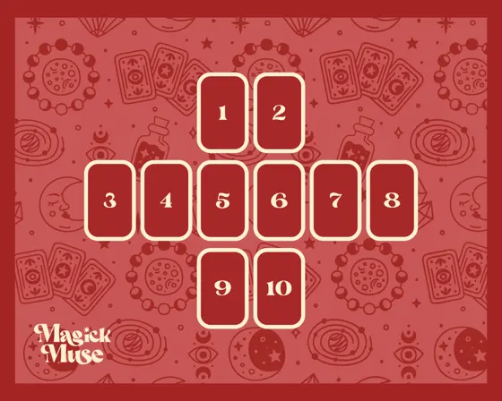

Card Grimoire
Navigating Your Third-Eye Spread
Spread Type
Spiritual Growth
Card Details
Card 1: Current state of your intuition – how open or blocked your third eye is now
Card 2: What clouds your vision – illusions, fears, or distractions obscuring clarity
Card 3: Hidden knowledge – what your subconscious already knows
Card 4: Messages from spirit – guidance from higher realms
Card 5: Your psychic strengths – natural intuitive gifts to develop
Card 6: Your psychic challenges – areas needing attention or healing
Card 7: Past life influence – karmic patterns affecting your sight
Card 8: How to open your third eye – practical steps for development
Card 9: What you will see – visions or insights coming through
Card 10: Integration – how to ground your intuitive gifts in daily life
Description
A spread for developing intuition, psychic awareness, and inner vision. Best used when seeking clarity on spiritual matters, developing divination skills, or when you feel called to strengthen your connection to subtle perception. For enhanced results, work with third-eye crystals such as lapis lazuli, blue kyanite, sodalite, or azurite during the reading.
Number of Cards1
